← 返回阅读库 · 原论文目录
论文讲解阅读文档 · 机器人学 · v105
Dreamer V2[2010.02193]
视频时长 00:23:19；讲解文字 7,238 字符；提取讲解画面 76 张。按视频原顺序阅读，每段文字保留时间戳。
文字来自整段视频的自动语音转写，按自然停顿分段，并与 PPT / 论文页面 / 演示画面对齐。未将讲解压缩为摘要；术语、数字和口述公式请结合画面及原论文核对。 阅读稿已校正规范部分明确术语误识别；原始逐字稿和每处修改记录另行保留。
讲解画面为源视频截图（640×360），不是可编辑 PPT 文件。全片按每秒 2 帧扫描内容变化，逐步展开页保留；连续动画保留代表画面。清晰度受源视频限制。
下载完整资料包 · 含离线 HTML、PDF、Word、全部 PPT 画面和字幕。
原论文与材料
Mastering Atari with Discrete World Models · 下载完整 PDF（26 页）
按时间阅读
00:00:00–00:00:18 · 画面 001
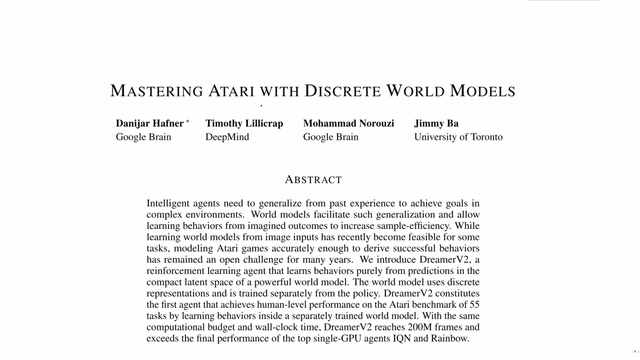
00:00:00–00:00:18 · 画面 001大家好,今天介绍一下 Mastering Atari with Discrete World Models 这篇论文，它主要是提出了一种基于模型的增强学习的方法，它们叫 Dreamer World 2,是第二代的 Dreamer，用来游玩常见的假达粒子游戏。那么我们的介绍也包含这么五个部分，在一开始我们会简单的回顾一下什么是增强学习，什么是基于模型的增强学习。
00:00:18–00:00:56 · 画面 002
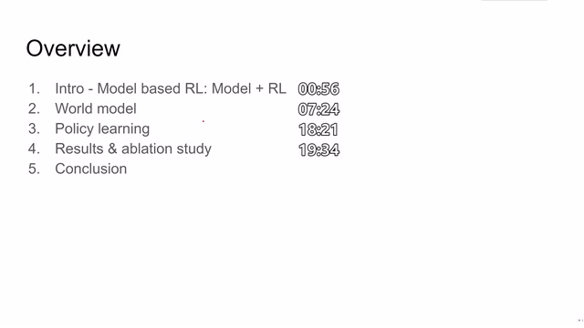
00:00:18–00:00:56 · 画面 002那么随后呢，会介绍一下这篇论文的亮点，也就是他们是如何构建一个 world model 来实践这个 model base 的。随后呢，我们会提一下他们的 policy learning，也就是他们的更强学习的部分。最后呢，我们会贴出一些他们的实验结果以及他们做的这个玻璃实验，以及他们最后达到一个结论。好的呢，我们开始。那么我们首先来介绍一下增强学习以及基于模型的增强学习。
00:00:56–00:01:03 · 画面 003
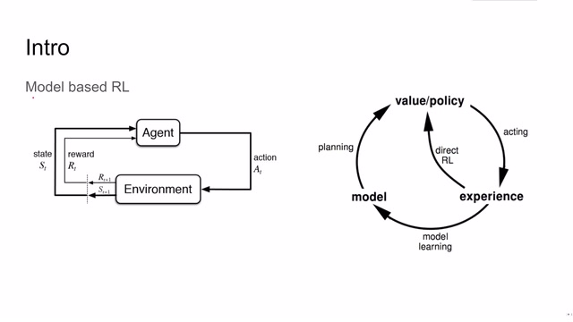
00:00:56–00:01:03 · 画面 003左边这个图呢，是一个经典的增强学习的一个模型的这么一个设计图。那我们看到这里有个 agent，这就是我们的机器、机器人或者是我们任何的一个 policy、一个策略都可以。那么呢，他呢首先会观察周围的环境，环境呢会在每一个时刻会给这么一个 agent 这么一个 state。
00:01:03–00:01:04 · 画面 004
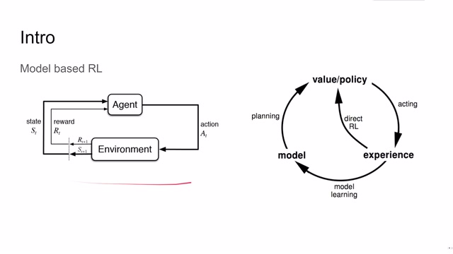
00:01:03–00:01:04 · 画面 00400:01:04–00:03:04 · 画面 005
00:01:04–00:03:04 · 画面 005这么一个状态，根据这个 state，那么 agent 他会根据自己的 policy 根据自己的策略来做出相应的动作去影响这个环境或者说是对自己的状态让人改变。随着他的这个动作的输入呢，这个环境会给出一个相应的 reward 奖励。那么我们的目的呢，就是指训练这么一个模型，训练这么一个 agent。使他能够获得尽可能多的在这个环境中获得尽可能多的奖励。那么比如说非常简单的，假如说我训一条狗对吧，我教他我给他说坐下。那么当他听到他的坐下这个命令的时候，相当于他这个 agent 输入了这么一个 state。然后这个时候他如果做出了真正的坐下的动作。
那么作为人我们训练他的时候，我们就会给他一个奖励，比如说给他一点小零食。那么如果他没有做出这个动作，那么我们相应的就不会给他这么一个奖励。那么作为狗狗猫很自然的就会想到，我要想获得尽可能多的奖励，那就可能尽可能去学习去响应我们当前观测中的状态。那么这是最简略的一个增强学习的这么一个模型。那么什么是 model based reinforcement learning 呢？在增长学习的过程中呢，我们可以发现这个在学习和训练的过程中呢，这个 agent 这个 policy 需要不断地和这个环境去交互，需要去不断地获得这种 stateaction 这么一些这些信息去不断地获得不断地去交流。但是在实际部署过程中呢，我们往往不一定有这样的条件。
00:03:04–00:04:50 · 画面 006
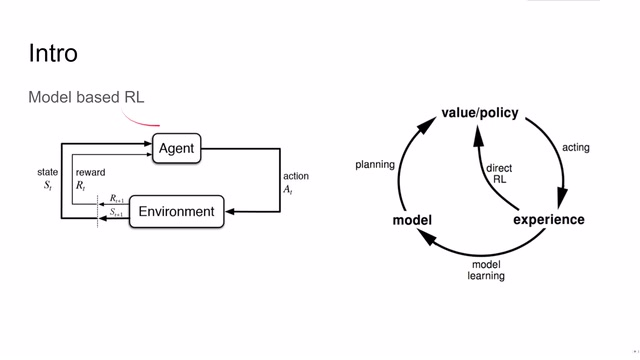
00:03:04–00:04:50 · 画面 006去让这个 agent 和这个环境来充分的交流学习。比如说我操作一个机械手，我要去抓取东西，我每次让他学习去抓取的时候这些都是对机械有损耗的。采集这些样本是需要花费很多时间的。还有比如说我机器人去到一个非常危险的环境，我又不可能让这个机器人自己去探索。去做出一些危险的举动。所以这个时候呢我们就会引入 model based 这么一个概念。
就是说我们在平时正常的去训练。这么一个 policy 的同时我们也在训练一个 model。这个 model 呢是用来描述。我们当前所在的这个环境。它的一些动力学特征。它的一些演化规则的等一等。比如说我们知道这个。在地球上这么一个物理环境下。受重力影响物体比如说我抛弃一个物体。它就应该向下落这么一个物理的规则。那么如果我们的模型。
能够学习到这样一个物理的规则。学习到这个物体与物体之间。相互作用的这么一个关系。那么我们是不是就可以自己运行一个模拟器。
00:04:50–00:04:52 · 画面 007
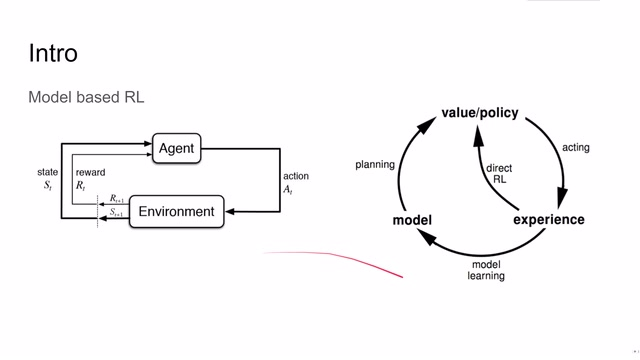
00:04:50–00:04:52 · 画面 00700:04:52–00:04:56 · 画面 008
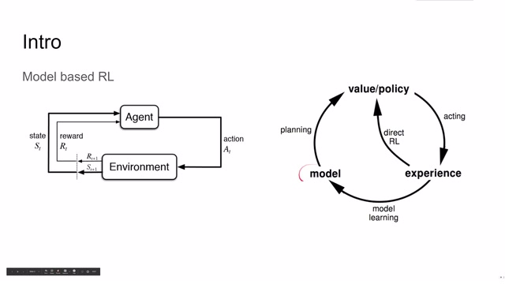
00:04:52–00:04:56 · 画面 008类似于模拟器这么一个东西。来模拟这样的一个外界的环境。
00:04:56–00:05:17 · 画面 009
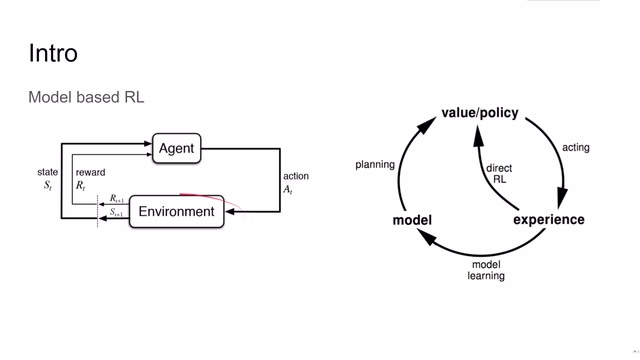
00:04:56–00:05:17 · 画面 009对这样子我们就避免了这个。我们的机器人实际跟这个真实的环境去产生操作。那么它就可以在这个模拟的环境中。不断的去学习更新迭代自己的这个策略。来获得更好的来获得在真实环境中。
00:05:17–00:05:32 · 画面 010
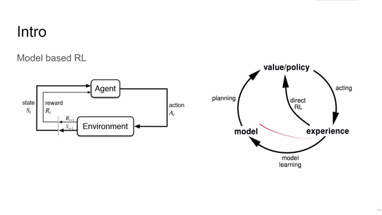
00:05:17–00:05:32 · 画面 010更好的这么一个表现。那么他们习惯的把在 model 中学习的过程叫做 dreaming琢磨那么在 model 中学习的这么一个机器人就叫做 dreamer 做梦的人好的我们再看到这篇文章那么这篇文章为什么有意思呢是因为它是第一个实现了这个 model based 这么一种方法比起那些没有 model 的这些方法它的性能还要好而且远高于之前所有的这些 model based 的方法
00:05:32–00:06:15 · 画面 011
00:05:32–00:06:15 · 画面 011像 Dreamer V1 Simple 这些都是很经典的基因模型的增强学习的算法，像 Rainbow 就是 DQN 的极大成者。那么这里的 1.0 呢代表着是作为人类玩家平均的表现，那可以看到了这些方法都已经比人类平均的表现要好一些了。那么如果这个图还不算是特别直观的话，我们再看到右边。
00:06:15–00:06:16 · 画面 012
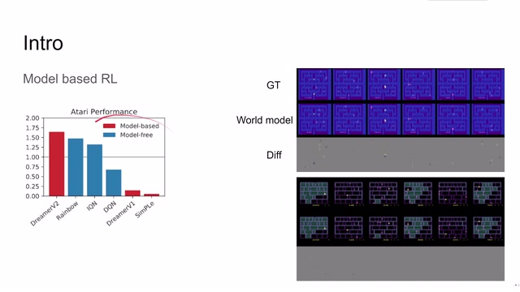
00:06:15–00:06:16 · 画面 01200:06:16–00:07:02 · 画面 013
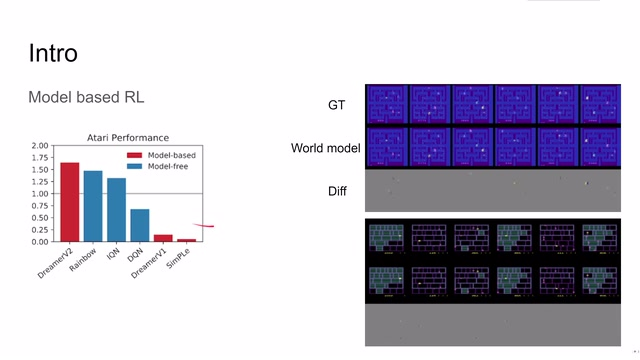
00:06:16–00:07:02 · 画面 013右边呢这里作者向我们演示了他们提出的模型所学习的 model 究竟能够和真实的 ground shoes 真实的这个图像相差到什么程度我们看到其实作者这里提供了 40 多张照片我们这里只选了两个案例像比如说这个迟到人这个环境那么上面呢是他真实的这个图像下面呢是模型预测出来的就是根据他的学习根据他对这个对这个上面游戏环境的观察学习然后预测出来的这个图像的发展变化我们可以看到他们两个的差别这里这三列第三行表示的我们预测的结果跟他的实际值的差别是非常小的那同样这里是另一个游戏那么作者演示了很多游戏从定性分析来看那么这个学习的 word model 是
00:07:02–00:07:03 · 画面 014
00:07:02–00:07:03 · 画面 01400:07:03–00:07:04 · 画面 015
00:07:03–00:07:04 · 画面 01500:07:04–00:07:13 · 画面 016
00:07:04–00:07:13 · 画面 01600:07:13–00:07:14 · 画面 017
00:07:13–00:07:14 · 画面 01700:07:14–00:07:23 · 画面 018
00:07:14–00:07:23 · 画面 018非常接近于这个 ground truth 那么作者是怎样构建一个模型来描述这个整个游戏的世界呢可以看到这里呢作者选取了这个视频序列作为模型的训练输入对于每一帧来讲我们使用一个卷积神经网络来描述这一帧的这个内容这里使用 Z1 来描述 X1 这个图像的内容同时呢这个模型内部会维持一个
00:07:23–00:07:24 · 画面 019
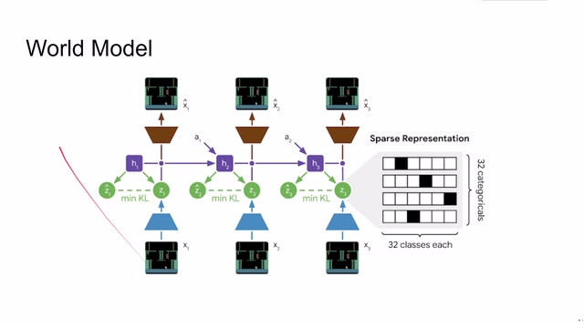
00:07:23–00:07:24 · 画面 01900:07:24–00:07:27 · 画面 020
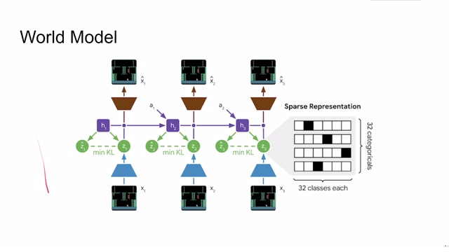
00:07:24–00:07:27 · 画面 02000:07:27–00:07:30 · 画面 021
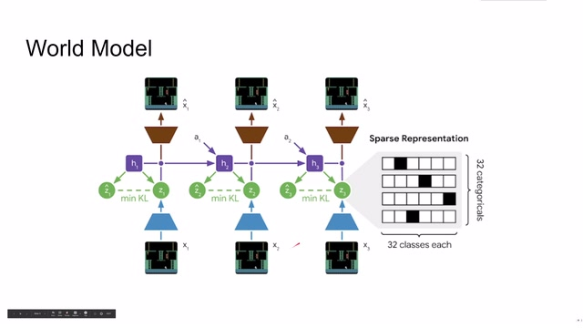
00:07:27–00:07:30 · 画面 02100:07:30–00:08:27 · 画面 022
00:07:30–00:08:27 · 画面 022隐含的状态在这里我们比如叫 H1 通过结合 H1 和 Z1 这两种状态呢我们就可以使这个模型重建出 X1 这个图像与此同时呢结合 H1 和 Z1 还有用户的输入 A1 我们可以预测出在下一个时刻这个模型内部的隐藏状态 H2 并且根据这个 H2 来导出我们对下一个时刻图像的描述子的 Z2 的这么一个预测我们这里叫 Z2 hat 那么随着时间的进行随着 X2 和 A2 输入进来之后我们就可以继续预测 H3 还有 Z3 这么一个状态那么怎样去训练这个世界模型呢我们这里可以看到模型预测出了 X1 hat 可以对比这个 X1 hat 和 X1 来获得这个模型重建效果的一个评估同时对于每个隐藏的状态
00:08:27–00:08:34 · 画面 023
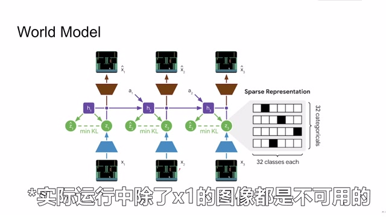
00:08:27–00:08:34 · 画面 02300:08:34–00:09:21 · 画面 024
00:08:34–00:09:21 · 画面 024我们都在预测下一幅图像的 Z 因此通过对比 Z2 hatZ2 我们也可以获得一种约束同时我们注意到我们使用 H1 Z1 还有 A1 可以预测出 H2 根据 H2 呢我们又可以预测出 X2 hat 那么这样做预测出的 X2 hat 和真正的 X2 来对比就会对我们的预测模型产生约束
00:09:21–00:10:29 · 画面 025
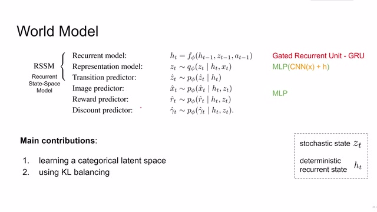
00:09:21–00:10:29 · 画面 025那么我们详细来看在整个这个世界模型中呢它存在了这么六个部分其中包括 recurrent model 也就是用来维护隐藏状态 h 的这个模型那么它是使用 git recurrent unit 来实现的像这 representation model 它是通过 h 还有 x 来依次数 z 的分布 distribution 然后再通过采样来实现获得这个 zt那么这里就是一个经典的卷积时间网络 CNN 的构造,然后它这里使用 CNN 对 X 事先提取出一些特征来,再把隐藏状态 H 串接进来,最后把这些一同送到一个 MLP,就是多层的全连接层里面,来最终实现预测出 Z 的 distribution,然后再采样获得 ZT。
那么相同的道理,这里的 transition predictor 就是通过 H 来预测 Z hat,那这里的 image predictor 就是我们说的 transpose convolution,它用来根据我们隐藏的状态 H1 还有 Z 来恢复出当前的这个图像。
00:10:29–00:10:41 · 画面 026
00:10:29–00:10:41 · 画面 02600:10:41–00:10:55 · 画面 027
00:10:41–00:10:55 · 画面 027除去使用的图像之外呢,这里还有 reward predictor 和 discount predictor。这两个 predictors 是用来预测环境中给予我们 agent 的奖励的数值,因为实际上我们回顾正向学习的这个框架,我们会发现这个环境不止会给 agent 提供它的 state 状态,它也要向这个 agent 提供它的 reward,就是我通过这一步的操作之后能获得多少的奖励,这一步也是需要在我们的事件模型中得以预测的。
00:10:55–00:11:17 · 画面 028
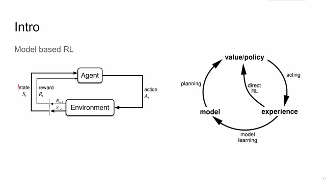
00:10:55–00:11:17 · 画面 02800:11:17–00:12:17 · 画面 029
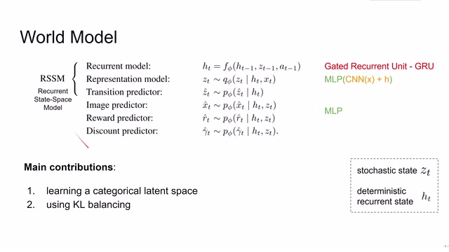
00:11:17–00:12:17 · 画面 029OK,那么介绍完了这些,终于可以介绍说这篇论文的最重要的贡献在哪里。这篇文章呢,最主要的两点贡献在于第一,那么相较于之前的文章呢,大家都是一般使用一些连续变量来描述整个这个系统的状态,我们叫 latent space,在这个隐含的空间中的这么一个系统的状态。然后呢,这篇文章就首先提出了使用一个离散的变量,这样是一连串离散的变量。
来描述这个系统的状态这样做的好处呢在后面我们会详细的介绍第二点呢就是他们使用一个叫 KL divergence balancing 这么一个技术那么事实上我们知道 KL divergence 它是它并不是对称的作者的就是通过调整 KL divergence 的权重来实现让这个模型能够更好的泛化这些呢我们后面会详细的讲到
00:12:17–00:12:21 · 画面 030
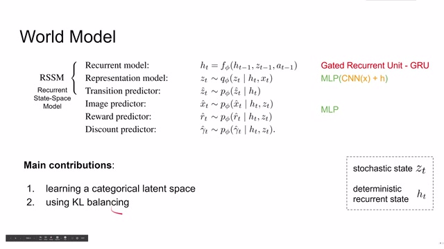
00:12:17–00:12:21 · 画面 030同时我们也注意到整个模型是使用 ZT 和 HT 两个变量来一起来描述的其中 ZT 它是一个随机的状态因为它是通过在这些概率分布中采样产生的而 HT 就是一个决定性的确定性的状态因为它就是由这么一个 recurrence model 来预测出来的所以这两个变量
00:12:21–00:12:52 · 画面 031
00:12:21–00:12:52 · 画面 031他们就是共同决定了整个这个系统当前的状态然后我们就详细讲一下作者是怎样通过离散的变量来表达整个模型的状态以及重点是为什么这样做是合理的那么这张图片呢来自 Google AI 的这个 blog 用来介绍介绍这篇论文使他们配的一张图像我们可以看到假如我们使用原来的连续的随机变量
00:12:52–00:12:53 · 画面 032
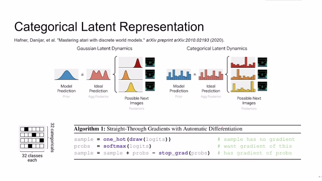
00:12:52–00:12:53 · 画面 03200:12:53–00:13:07 · 画面 033
00:12:53–00:13:07 · 画面 03300:13:07–00:13:08 · 画面 034
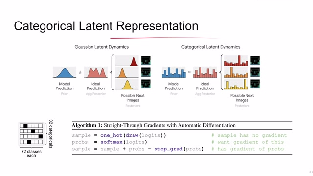
00:13:07–00:13:08 · 画面 03400:13:08–00:14:27 · 画面 035
00:13:08–00:14:27 · 画面 035我们其实是默认这么未来的图像呢都是符合某一种高斯分布的，那么它们这几个高斯分布呢，未来所有可能图像的高斯分布呢叠在一起，它可能会形成这样一种分布，那么这个分布呢就不是高斯分布了，而我们的模型如果仍然是用一个高斯分布去尝试拟合这样一个模型，那么显然是很难达到一个满意的这么一个拟合的效果相反，如果我们全部使用稀疏的离散的变量用来描述图像的状态，不管你未来是怎样的一个图像，我把这些分布结合起来之后它都能获得一个离散的状态空间，而这个离散的状态空间是可以通过调整这些参数去拟合的，就是说在某种程度上来讲，使用离散变量之后我们的模型的自由度反而变高了
可以更加准确的拟合目标的这个概率分布那么这就是作者认为的主要的原因为什么说离散的表达是一个好的表达那么在实际的操作中呢作者使用了 32 个变量每个变量呢它是拥有 32 个种类也就是说实际上我们会有 32 乘 32 种可能性我来描述整个状态空间然后这里呢我们可以看到它是使用了吸收编码
00:14:27–00:14:28 · 画面 036
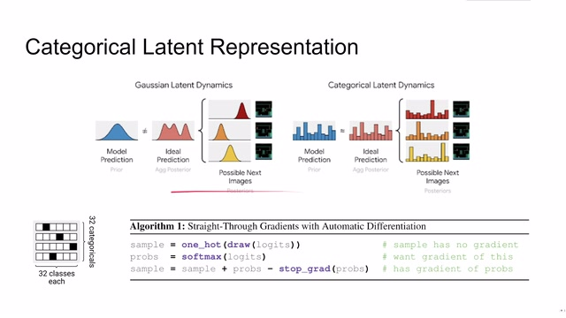
00:14:27–00:14:28 · 画面 03600:14:28–00:14:35 · 画面 037
00:14:28–00:14:35 · 画面 03700:14:35–00:14:36 · 画面 038
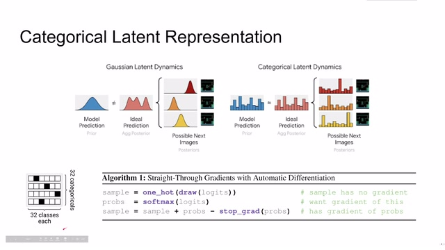
00:14:35–00:14:36 · 画面 03800:14:36–00:14:40 · 画面 039
00:14:36–00:14:40 · 画面 03900:14:40–00:14:41 · 画面 040
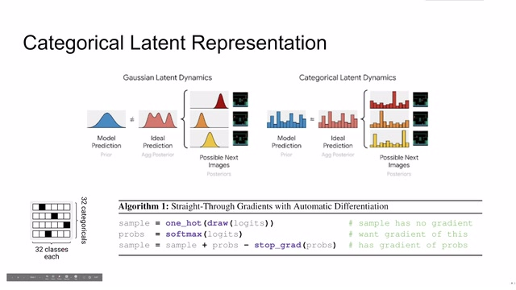
00:14:40–00:14:41 · 画面 04000:14:41–00:15:54 · 画面 041
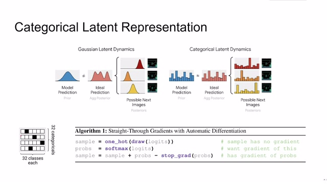
00:14:41–00:15:54 · 画面 041黑色的地方是 1，其他地方都是 0，是 one hold encoding 这样一个策略，但是呢，我们使用离散的状态表达又会带来一个问题，就是当我们在技术上 t 度传递的时候，t 度呢是没法翻过这种离散变量，那么怎样解决这样一个问题呢，作者这里使用了原来论文中提到的 street through gradients那么这里在上游的模型输出一个概率分布之后，首先进行采样，这个采样就是我们最后会形成我们离散的 sample 样本，同时使用 softmax 对上游输出的概率分布进行处理，我们来传递 softmax 过后的这样一个概率的分布，通过这样的操作之后，我们既可以保留原来 sample 的数值，同时也把 gradient 导数
通过这个 softmax 的形式来传递过来了，那么这就是作者如何去训练出得到一个离散的这么一个状态空间的表达。本文的第二贡献呢是 K.L.Bankson，作者实验他的意图呢其实是非常好理解。让我们回到模型的运行流程，让我们回到这个模型的流程图，我们可以看到作者通过 H 来预测 Z，同时这个 Z 的 ground truth。
00:15:54–00:16:01 · 画面 042
00:15:54–00:16:01 · 画面 04200:16:01–00:17:27 · 画面 043
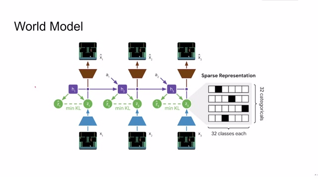
00:16:01–00:17:27 · 画面 043是由一个卷积神经网络从实际的图像 X 中提取出来的，那么我们设想一种情况，假如说那么我们来想象这样一种情况，假如不论你的图像输入图像是什么，每次这个神经网络都会给你输出一个相同的或者说是非常近似的一个 Z 作为 ground truth，那么对于这个 transition predictor 来说其实预测未来是一个非常简单的事情，它只要每次去输出相同的一个变量就可以了，它甚至不需要怎么去修改 Z 的预测，那么这个就带来一个问题，我们实际的 latent representation 我们隐藏的对系统状态的估计的表达，它是不得够足以反映出输入图像 X 的变化的
也就是说，这样会导致模型的坍塌，也就是使我们不能够精确的重建出输入图像，更不要谈说预测未来的图像，尤其是当我们一起训练整个这一个大的模型的时候，这个问题其实是经常出现的，那么作者呢这里使用两个 KL divergence 加权，使这个 prior 呢更加倾向于这个 posterior，也就是说我们在训练这个模型的时候呢
00:17:27–00:17:28 · 画面 044
00:17:27–00:17:28 · 画面 04400:17:28–00:17:36 · 画面 045
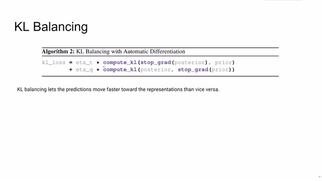
00:17:28–00:17:36 · 画面 04500:17:36–00:18:01 · 画面 046
00:17:36–00:18:01 · 画面 046使这个 z hat 更加接近于这个 z，而不是这个 z hat 和这个 z 他们两个在中间找一个相互 compromise 的这么一个点，而是我们强制的使用这个 z 使这个 z hat 向这个 z 靠拢，这样子呢就尽可能的保证了我们的 representation z 是它原本的 representation，而这个 transition predictor 能够真正的学到对未来状态的预测，这就是 KL balancing 的这个作用
00:18:01–00:18:07 · 画面 047
00:18:01–00:18:07 · 画面 04700:18:07–00:18:10 · 画面 048
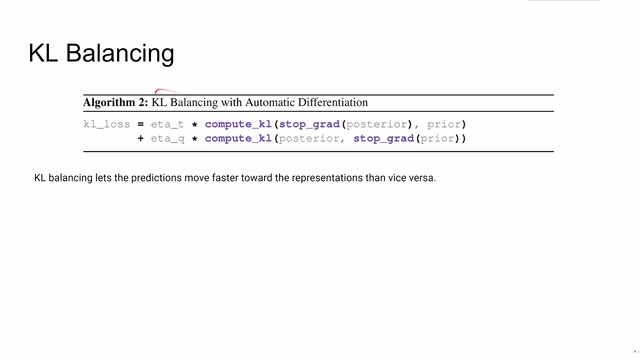
00:18:07–00:18:10 · 画面 048OK，那么介绍完了整个这个世界模型，就是 agent 如何认识这个世界的运作规律，那么我们来介绍一下 policy learning，那么这里呢作者使用的经典 actor critic 这个结构，是我们会有一个 actor 网络来用来证实我们产生真正的 policy，产生真正的 action，那么这里使用的 critic 来评判这个 action 是否是一个好的 action
00:18:10–00:18:50 · 画面 049
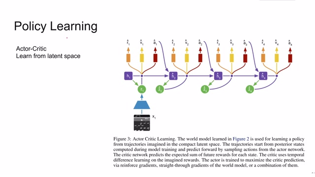
00:18:10–00:18:50 · 画面 049那么实际上这两个网络是不断在对抗中进步的同时呢，因为我们前面在 world model 中提取出了 latent representation，也就是说我们 actor 和 credit 不用再从原始的这个低信息密度的图像中去提取信息，他们是可以直接通过 latent space，也就是我们之前讲的这个 ZT 和 HT，通过他们两个这个表达
00:18:50–00:19:01 · 画面 050
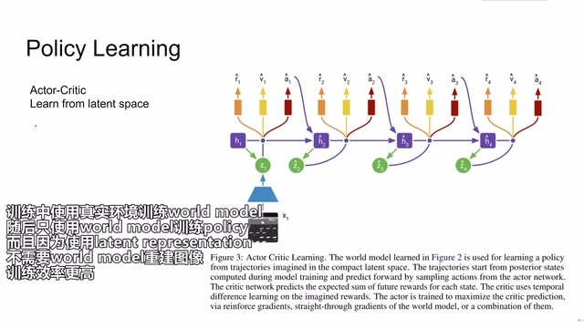
00:18:50–00:19:01 · 画面 05000:19:01–00:19:02 · 画面 051
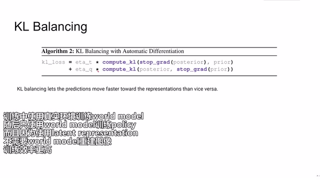
00:19:01–00:19:02 · 画面 05100:19:02–00:19:08 · 画面 052
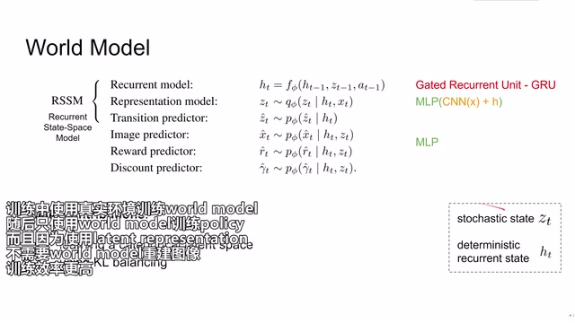
00:19:02–00:19:08 · 画面 052来直接学习出自己的 policy
00:19:08–00:19:10 · 画面 053
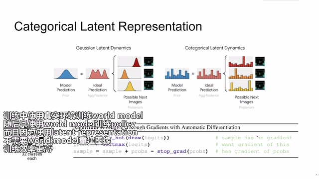
00:19:08–00:19:10 · 画面 05300:19:10–00:19:18 · 画面 054
00:19:10–00:19:18 · 画面 054那么这样子呢是减少了参数量进一步提高了效率同时呢作者也尝试了在这个训练 actor 的过程中呢
00:19:18–00:19:22 · 画面 055
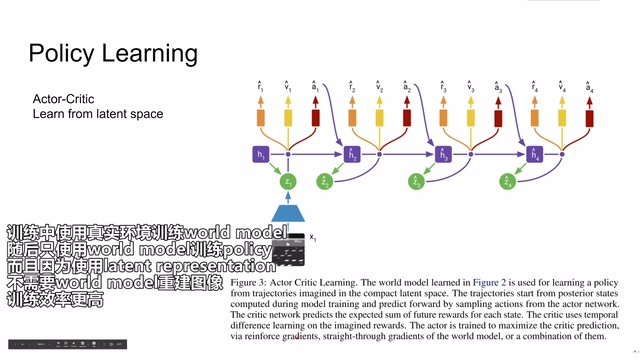
00:19:18–00:19:22 · 画面 055使用了 straight-through gradients这个我们在
00:19:22–00:19:23 · 画面 056
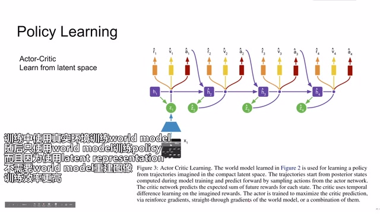
00:19:22–00:19:23 · 画面 056World Model 中介绍过的这个策略
00:19:23–00:19:33 · 画面 057
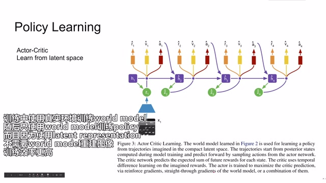
00:19:23–00:19:33 · 画面 057和最开始经典的 REINFORCE gradients一起来共同训练这个模型那么我们可以看到训练结果
00:19:33–00:20:19 · 画面 058
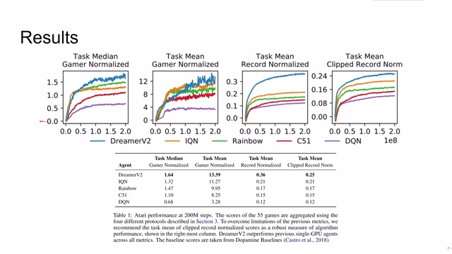
00:19:33–00:20:19 · 画面 058在横轴呢这里表示训练的次数那么纵轴呢是这个 agent 所取得的奖励所取得的累积的奖励我们可以看到这里呢是相对于人类玩家的是任务的中位数相对于人类玩家的表现所有任务的平均值相对于人类玩家的表现还有呢还有这里呢是相对于世界纪录的玩家的表现我们可以看到这个虽然整个这个模型以各种增强学习的方法他们的表现呢都已经超过了一般的平均人类的水平但是对于世界纪录玩家呢还是有不小的差距那么这里呢
00:20:19–00:20:20 · 画面 059
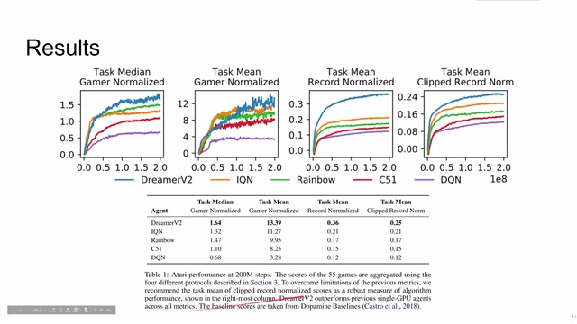
00:20:19–00:20:20 · 画面 059有更加精确的数值的结果
00:20:20–00:20:22 · 画面 060
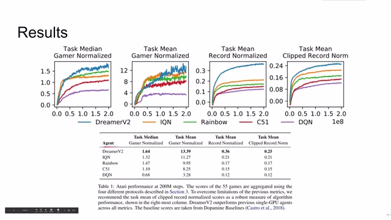
00:20:20–00:20:22 · 画面 06000:20:22–00:20:25 · 画面 061
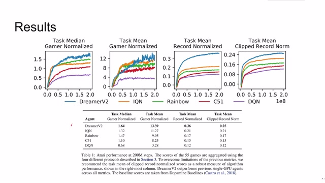
00:20:22–00:20:25 · 画面 061然后我们看到作者所做的玻璃实验
00:20:25–00:20:54 · 画面 062
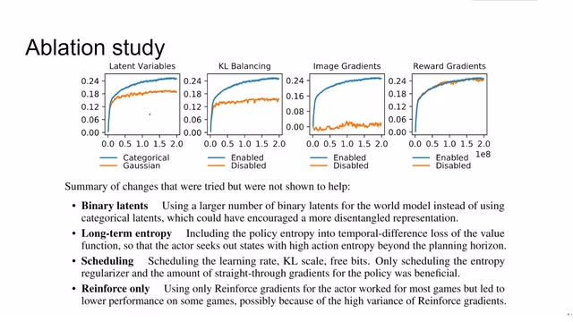
00:20:25–00:20:54 · 画面 062来验证本文提出的两个方法确实能够改善增强学习的效果你看到第一个是使用色和黄色这里对比的是使用本文使用的离散的状态变量和对比于传统的使用连续的高速模型的状态变量这里显示的是启用 KL balancing和没有启用时性能的对比那么这个是非常有意思的这个是那么这组实验呢
00:20:54–00:21:16 · 画面 063
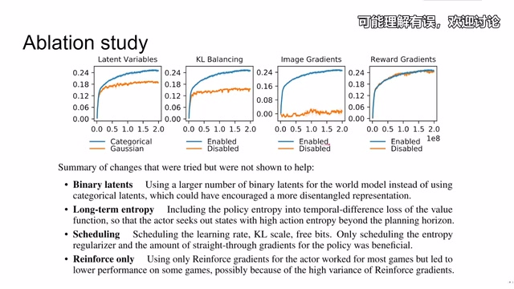
00:20:54–00:21:16 · 画面 063是说作者有没有使用image gradients也就是 reconstruction loss也就是模型根据 latent representation来复原出的图像和实际的图像进行对比产生的 gradients，那么如果使用的效果当然是应该非常好，如果不使用就看到这个模型就基本学不到什么了，这是预期中的表现，也就是说这个模型呢确实实的是学习到了图像中的相关的信息来用来产生它的策略来用来描述这个系统的状态
00:21:16–00:22:29 · 画面 064
00:21:16–00:22:29 · 画面 064而不是根据训练样本中的关于奖励的信息等等其他一些辅助的信息来学到的系统的状态，同时我们也可以看到在这个实验中，这里表达的是在训练 modal representation 在训练 latent representation 的时候是否使用奖励是否使用 reward loss 所产生的 gradient 的差别，可以看到几乎没有差别也就是说作者提出的模型确实没有通过学习奖励这些辅助的信息来获取了当前的性能同时呢作者还汇报了一些他们尝试了一些其他的方法但是没有效果的这些尝试比如说他们使用二进制的这个 Lesson Representation 来表达整个状态空间他们使用更长期的 Entropy 这个商来训练 Policy 还有他们是否是需要更改
还有是否需要定期更改学习力等这些超参数以及使用不同的方法来训练 actors 等等等等这些感兴趣的朋友可以在原文中查看那么来到结论作者通过实验证明使用离散变量加 KL balancing 两种策略可以有效的大幅度的改进增强学习系统中 agent 的性能这就是这个论文最核心的贡献
00:22:29–00:22:39 · 画面 065
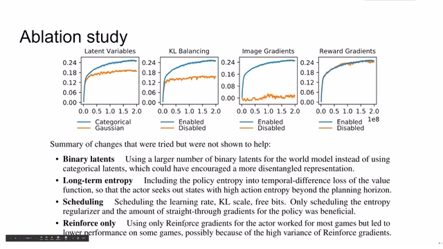
00:22:29–00:22:39 · 画面 06500:22:39–00:22:43 · 画面 066
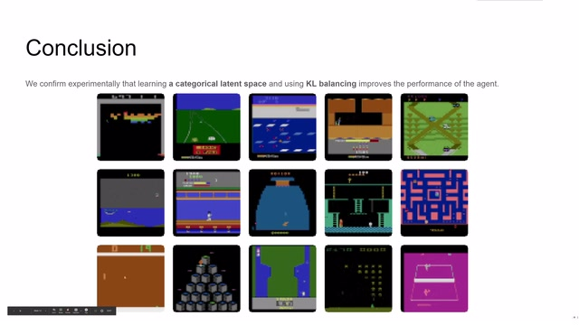
00:22:39–00:22:43 · 画面 06600:22:43–00:22:47 · 画面 067
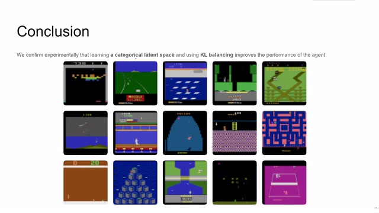
00:22:43–00:22:47 · 画面 06700:22:47–00:22:51 · 画面 068
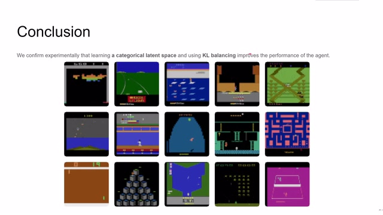
00:22:47–00:22:51 · 画面 06800:22:51–00:22:55 · 画面 069
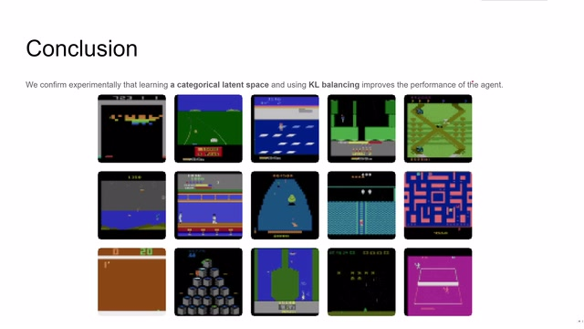
00:22:51–00:22:55 · 画面 06900:22:55–00:22:59 · 画面 070
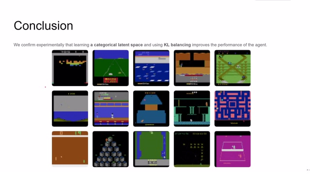
00:22:55–00:22:59 · 画面 070那么这里也列出了作者训练好的 agent 在游玩这些不同游戏时的这么一个表现的这个录像 OK 以上就是我对这篇论文的简析在视频描述中你可以找到关于这篇论文的地址以及更多详细的资料那么感谢您的收看再见
00:22:59–00:23:03 · 画面 071
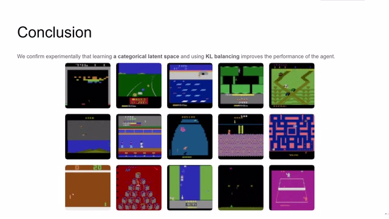
00:22:59–00:23:03 · 画面 07100:23:03–00:23:07 · 画面 072
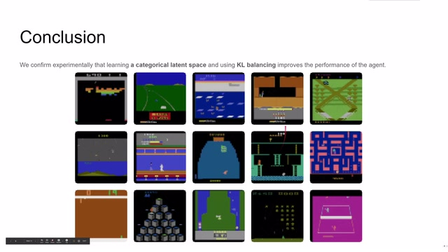
00:23:03–00:23:07 · 画面 07200:23:07–00:23:11 · 画面 073
00:23:07–00:23:11 · 画面 07300:23:11–00:23:15 · 画面 074
00:23:11–00:23:15 · 画面 07400:23:15–00:23:18 · 画面 075
00:23:15–00:23:18 · 画面 07500:23:18–00:23:19 · 画面 076
00:23:18–00:23:19 · 画面 076转写与来源说明 · 2 个自动复核提示
保留 137 个原始语音片段，2 个片段触发自动复核提示。提示仅用于定位可能的术语、重复或识别问题，不等于已确认错误。
讲解画面为源视频截图（640×360），不是可编辑 PPT 文件。全片按每秒 2 帧扫描内容变化，逐步展开页保留；连续动画保留代表画面。清晰度受源视频限制。
原视频：paper/合集_2026-10-16_机器人学/[论文简析]Dreamer V2[2010.02193].mp4
SHA-256：df7430b51d8fb750aabb755670f3fa420e8778144d8de55aa947217ead8bab0b
那么
使用了 straight-through gradients
全文按视频语音与画面制作。原论文可从上方链接下载；完整资料包保留全文、原始逐字稿、字幕和校对记录。